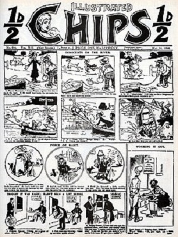

Comics
- Not to be confused with Cartoon.
- "Comic" redirects here. For other uses, see Comic (disambiguation).
- "Comic art" redirects here. For the magazine, see Comic Art.
Comics are a medium used to express ideas with images, often combined with text or other visual information. It typically takes the form of a sequence of panels of images. Textual devices such as speech balloons, captions, and onomatopoeia can indicate dialogue, narration, sound effects, or other information. There is no consensus among theorists and historians on a definition of comics

Cartoon
In print media, a cartoon is a drawing or series of drawings, usually humorous in intent. This usage dates from 1843, when Punch magazine applied the term to satirical drawings in its pages, particularly sketches by John Leech.
More ...

British comics
A British comic is a periodical published in the United Kingdom that contains comic strips. It is generally referred to as a comic or a comic magazine, and historically as a comic paper. The three longest-running comics of all time were all British.
More ...

American comic book
An American comic book is a thin periodical literary work originating in the United States, commonly between 24 and 64 pages, containing comics. American comic books first gained popularity after the 1938 publication of Action Comics.
More ...